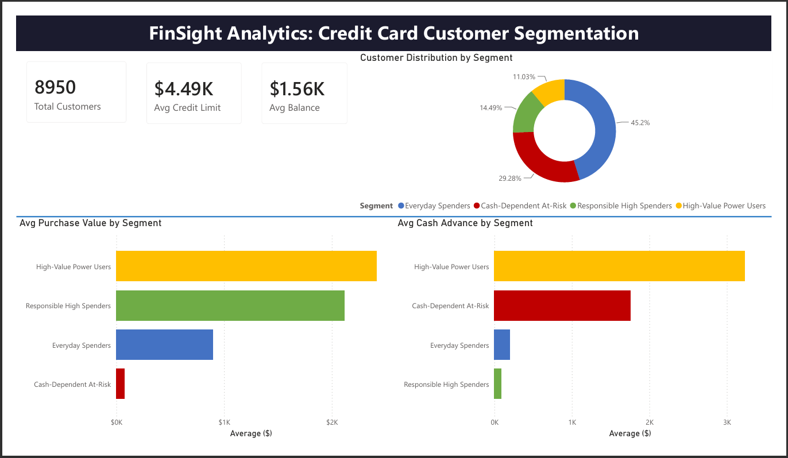
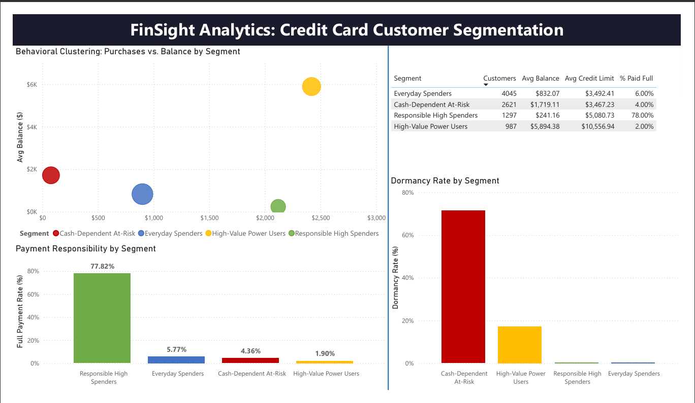

Project 02 · Financial Services · Machine Learning
K-Means clustering pipeline on 8,950 credit card holders — from raw messy CSV through Python cleaning, feature engineering, PostgreSQL, and Power BI DirectQuery.
A retail bank was applying uniform marketing and retention strategies across its entire 8,950-customer credit card base — sending the same offer to a high-value frequent buyer and a financially stressed cash-advance-dependent customer. The result: wasted acquisition spend and missed early intervention for at-risk accounts.
The goal was to segment customers by real behavioral patterns so marketing can target the right message to the right segment and retention teams can flag at-risk customers before they churn.
MINIMUM_PAYMENTS (313 missing values, 3.5%) filled with median within each credit limit tier — more accurate than a global fill since minimum payments correlate with credit limit.
90 records exceed the 99th percentile. In financial data, extreme values are real high-value customers — removing them would eliminate exactly the segment the bank most wants to understand.
Silhouette score peaks at K=7 (0.3199) but the gain over K=4 (0.3084) is 0.0115 — negligible. More critically, 7 segments is not actionable. A marketing team can run differentiated campaigns across 4 types, not 7.
78% full payment rate, $2,119 avg purchases. Your best customers — spend heavily and pay responsibly.
→ Premium retention, credit limit upgrades71% dormant, $1,762 avg cash advance, only 4% full payment. Primary early churn signal.
→ Early intervention, debt consolidation outreachHighest credit limit ($10,557 avg), uses all financial products, carries revolving debt.
→ Upsell premium cards and investment productsModerate activity, low payment discipline, 0% dormant. The core customer base.
→ Cashback incentives to increase engagement
